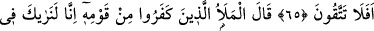
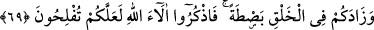

HÛD ALEYHİSSELÂM
VE ÂD KAVMİ
65. Âd kavmine de kardeşleri Hûd’u (gönderdik). O dedi ki: “Ey kavmim!
Allah’a kulluk edin; sizin O’ndan başka tanrınız yoktur. Hâlâ sakınmayacak
mısınız?”
66. Kavminden ileri gelen kâfirler dediler ki: Biz seni kesinlikle bir beyinsizlik
içinde görüyoruz ve gerçekten seni yalancılardan sanıyoruz.
67. “Ey kavmim! dedi, ben beyinsiz değilim; fakat ben âlemlerin Rabbinin
gönderdiği bir elçiyim.
68. Size Rabbimin vahyettiklerini duyuruyorum ve bensizin için güvenilir bir
öğütçüyüm.
69. Sizi uyarmak için içinizden bir adam vasıtasıyla Rabbinizden size bir zikir
(kitap) gelmesine şaştınız mı? Düşünün ki O sizi, Nuh kavminden sonra onların
yerine getirdi ve yaratılışta sizi onlardan üstün kıldı. O halde Allah’ın nimetlerini
hatırlayın ki kurtuluşa eresiniz.”
70. Dediler ki: Sen bize tek Allah’a kulluk etmemiz ve atalarımızın tapmakta